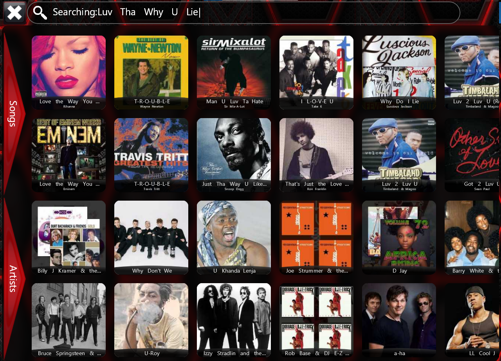

What makes the Playgate Digital Jukebox such a good software
package?
What makes the Playgate Digital Jukebox such an outstanding software package? It’s simple: it was
designed with the needs of the Commercial Coin-Operator in mind, offering unparalleled
flexibility and
customization to meet your specific requirements.
Gone are the days of being restricted to specified hardware (e.g., motherboards or amplifiers) or
relying on a standard jukebox setup with minimal configurable options. The Playgate Digital
Jukebox
system is built to be easily adaptable to your existing hardware, making it an ideal solution for
upgrading or converting older jukebox systems.
Our software is user-friendly, intuitive, and designed with a logical, well-thought-out interface that
simplifies operation for users. Additionally, we provide a comprehensive manual designed for
beginners
and advanced users alike. This guide covers everything from basic operations to advanced features,
including all models, operational modes, Backoffice functions, and online capabilities.
For those who choose to operate jukeboxes via our online platform, the Playgate system offers even more
powerful features to enhance management and performance. Whether you’re modernizing your setup or
starting fresh, the Playgate Digital Jukebox delivers the flexibility and functionality you need to
succeed.

Intelligent Software
Managing the Playgate Digital Jukebox software has never been easier, thanks to its intelligent
features
and functionalities. One key highlight is the software’s adaptability—it automatically resizes page
layouts to fit various screen sizes and resolutions, saving you valuable setup time and effort.
For end-users and customers, we’ve incorporated advanced tools that elevate their experience. One
standout is the powerful search functionality, designed to help users quickly find what they’re looking
for. Even when queries are significantly misspelled, the software delivers accurate results. For
example, a user searching for "Love the Way You Lie" by Eminem & Rihanna entered "Luv Tha Why U Lie."
Despite the major misspelling, the software intelligently identified and returned the correct result,
ensuring a seamless and enjoyable experience.
The Playgate Digital Jukebox software is built to simplify management for operators while
offering an
intuitive and engaging experience for users. It’s a smart, efficient solution designed to meet the needs
of today’s venues and their customers.

Display Modes
The Playgate Digital Jukebox software is versatile and supports a variety of display setups to
suit your
venue’s needs. Here’s a breakdown of the available configurations:
1. Single Screen Jukebox with Horizontal Display
- Description: This budget-friendly layout features a single monitor that serves as both the
user interface and video display.
- Features:
- The video section automatically switches to full-screen mode after a set period of inactivity.
- Users can manually activate full-screen mode by tapping the video display area.
2. Double Screen Jukebox with Horizontal Main Display
- Description: The most popular setup, this layout includes a full-screen user interface on one
monitor and a second monitor dedicated to video, karaoke, track information, and advertising.
- Features:
- Ideal for venues looking to provide a comprehensive and engaging entertainment experience.
3. Single Screen Jukebox with Vertical Display
- Description: This vertical layout uses a single monitor with a dedicated video display area.
- Features:
- A sleek design that integrates the user interface and video display for a modern appearance.
4. Double Screen Jukebox with Vertical Main Display
- Description: This impressive configuration includes a large vertical full-screen user
interface and a second horizontal monitor for video, karaoke, track information, and advertising.
- Features:
- A standout choice for venues seeking a visually striking and user-friendly setup.
With its flexible display options, the Playgate Digital Jukebox software ensures a tailored entertainment
solution that fits your venue and enhances the customer experience.
Even more of great Features
(Please note: Some features may not be available on all models in our range. Refer to
Jukebox Software for a detailed list of features for each Playgate
Jukebox
system.)
Key Features of Playgate Jukebox Software
-
Touchscreen Software: Intuitive, custom-designed software compatible with a variety of
touchscreen
sizes.
-
Comprehensive Genre Categories: Includes Pop, Metal, Eighties, Nineties, Country, Blues, African
Hits, Club, Hip-Hop, and more.
-
Instant Playback: Enjoy music without delays—no waiting for CDs to load.
-
Extensive Music Library: Access thousands of audio and video tracks.
-
Integrated Karaoke: High-quality karaoke functionality with thousands of karaoke tracks included.
-
Custom Song Lists: Create and manage user-defined playlists.
-
Consistent Audio Levels: Ensures uniform sound quality across all media.
-
User-Friendly Interface: Navigate quickly and easily to your favorite songs.
-
Auto DJ Feature: Smooth cross-fading between tracks for uninterrupted playback.
-
Commercial-Grade Software: Built with a robust media player engine for reliability.
-
Theme Customization: Choose from a wide selection of themes to personalize the jukebox’s look and
feel.
-
Language Options: Supports approximately 90 languages, including African, European, Asian, and
Middle Eastern languages.
-
Multiple Monitor Support: Display karaoke lyrics, videos, and advertisements on secondary
monitors.
-
Vertical and Horizontal Screen Support: Configure the user interface for landscape or portrait
modes.
-
Background Music Playback: Randomly plays tracks from a preselected set when the queue is empty.
-
"More Like This" Feature: Explore similar tracks by artists or genres.
-
Playlist Builder: Build, save, and manage playlists directly on the jukebox.
-
High-Quality Video Playback: Supports 1080p and 720p HD music videos.
-
Enhanced Navigation: Quickly find your favorite tracks or artists with ease.
-
Intelligent Search: Smart search functionality delivers accurate results, even with misspelled
queries.
-
HD Advertising: Showcase 720p high-definition video advertisements.
-
Smart Technology: Includes an automated music library updater and system data manager.
-
Online/Offline Capability: Operates seamlessly in both online and offline modes, depending on
your
needs.
-
Customizable Features: Tailor the jukebox to your requirements by enabling or disabling specific
functions.
-
Task Scheduling: Automate events like theme changes, happy hours, and volume adjustments.
-
Brand Promotion: Display operator banners and advertisements to showcase your business.
-
Live Scroll System: Touch-responsive page slides for an engaging and dynamic user interface.
… and much more!
The Playgate Digital Jukebox software combines advanced functionality, user-friendly design, and
powerful
customization to deliver an exceptional experience for operators and customers alike.